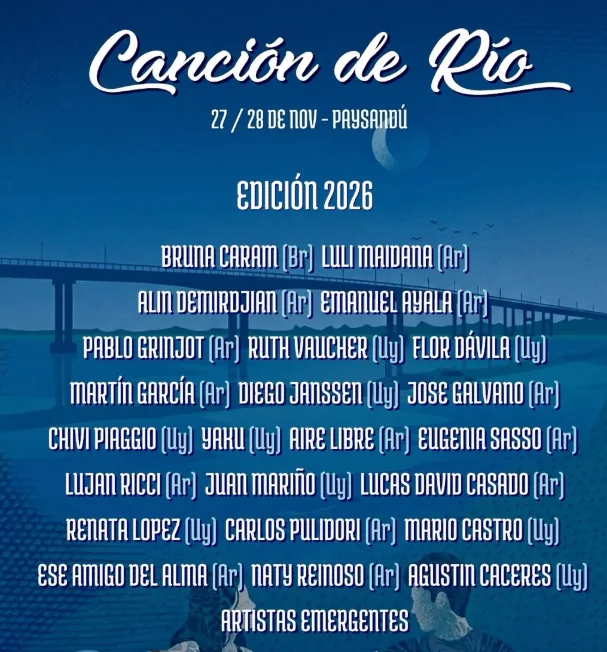

Festival de música · Paysandú, Uruguay
Un río,
muchas voces.
Canción de Río es un encuentro de música independiente que reúne artistas de Uruguay y la región en Paysandú. Canciones, cruces y nuevas voces a orillas del río.
